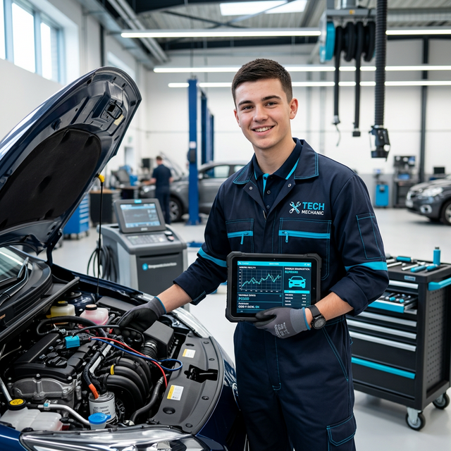

TECHNIK
POJAZDÓW
SAMOCHODOWYCH
SZKOŁA BRANŻOWA II STOPNIA
Zdobywasz specjalistyczne wykształcenie średnie dające Ci pożądany i prestiżowy tytuł Technika. Rozszerzasz swoje dotychczasowe umiejętności o diagnozowanie i obsługę nowoczesnych mechatronicznych układów samochodowych oraz przygotowujesz się do roli kierowniczej i diagnostycznej.

Co nas wyróżnia?
Diagnostyka i mechatronika
Nauczysz się przeprowadzać zaawansowane komputerowe badania techniczne i diagnostyczne. Zrozumiesz i naprawisz nowoczesne systemy elektroniczne oraz mechatronikę stosowaną w dzisiejszych pojazdach.
Wyspecjalizowane miejsca pracy
Jako technik znajdziesz zatrudnienie w najlepszych autoryzowanych serwisach (ASO), firmach regenerujących podzespoły elektromechaniczne czy na Stacjach Kontroli Pojazdów.
Zarządzanie i organizacja
Poza wiedzą techniczną, przygotujemy Cię do zarządzania procesami napraw, nadzorowania zespołów pracowników, a także do profesjonalnej pracy w biurze obsługi klienta w serwisie samochodowym.
Matura i prawo do studiów
Szkoła branżowa II stopnia to nie tylko bezstresowy rozwój zawodowy. Po ukończeniu nauki będziesz w pełni przygotowany do matury, co otworzy Ci furtkę na najbardziej prestiżowe uczelnie wyższe.
Zdobywasz nową kwalifikację kierowniczą:
Zdajesz państwowy egzamin nadający uprawnienia do "Organizacji i prowadzenia procesu obsługi pojazdów samochodowych". Uzyskany dyplom znacząco poszerza Twoje możliwości rynkowe o stanowiska takie jak menedżer serwisu, czy uprawniony diagnosta techniczny na SKP.

Zeskanuj kod!
Dowiedz się więcej i zostań prawdziwym profesjonalistą!